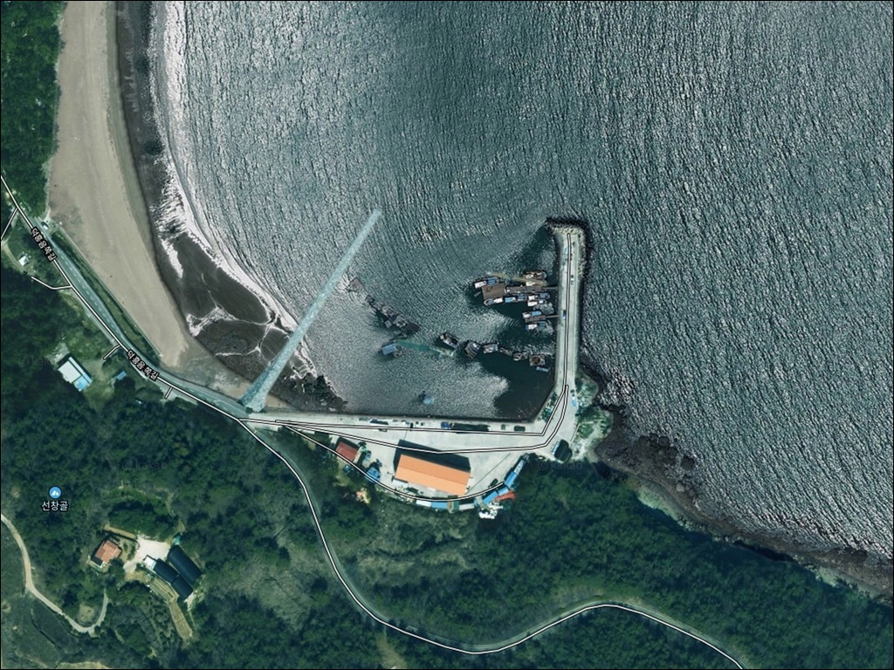
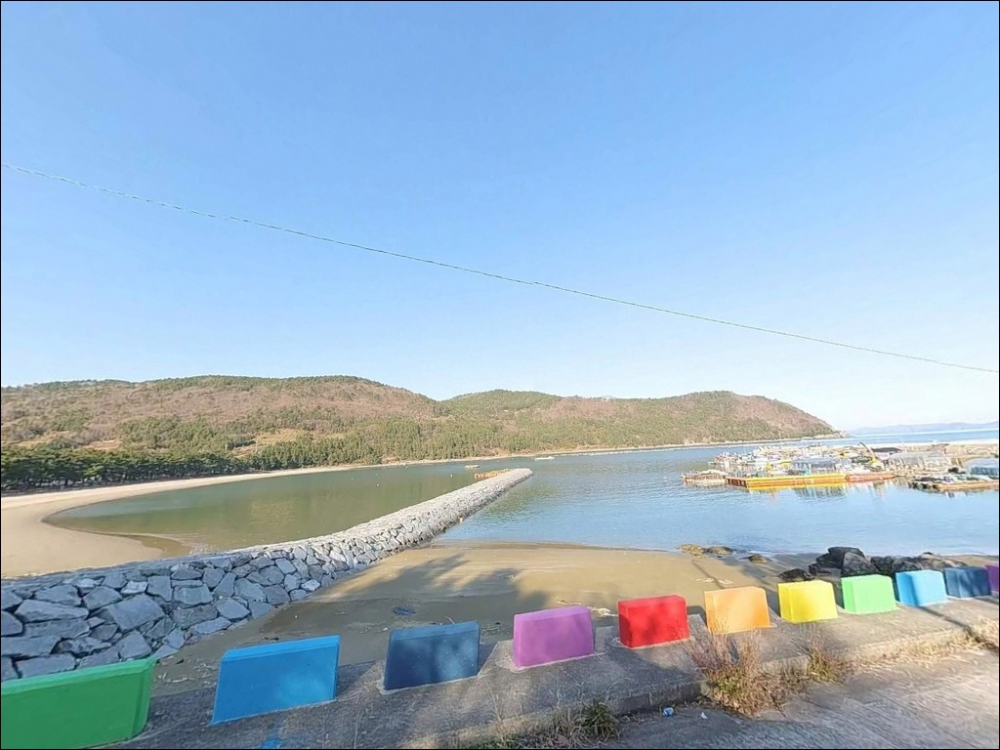
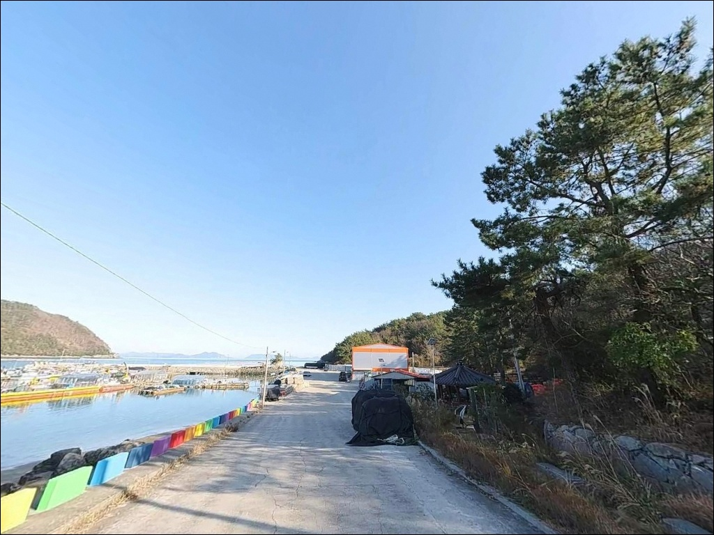
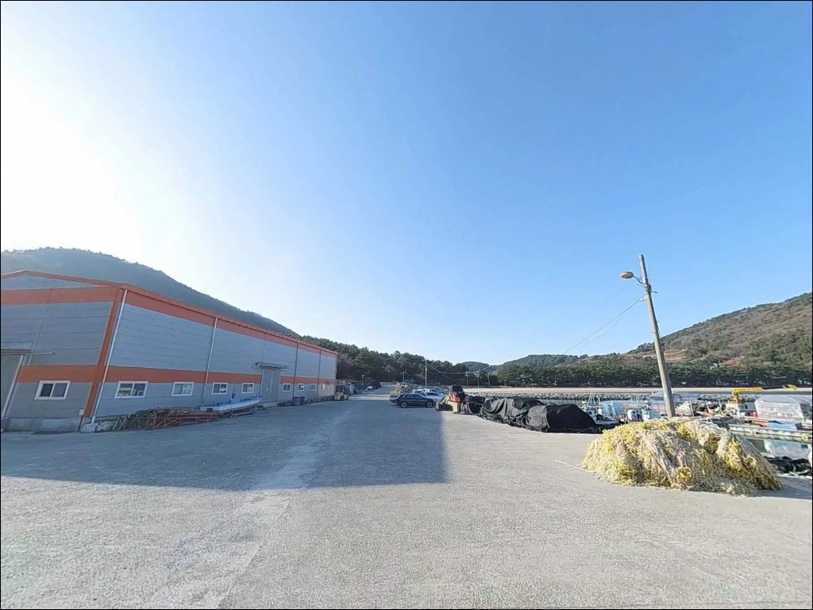
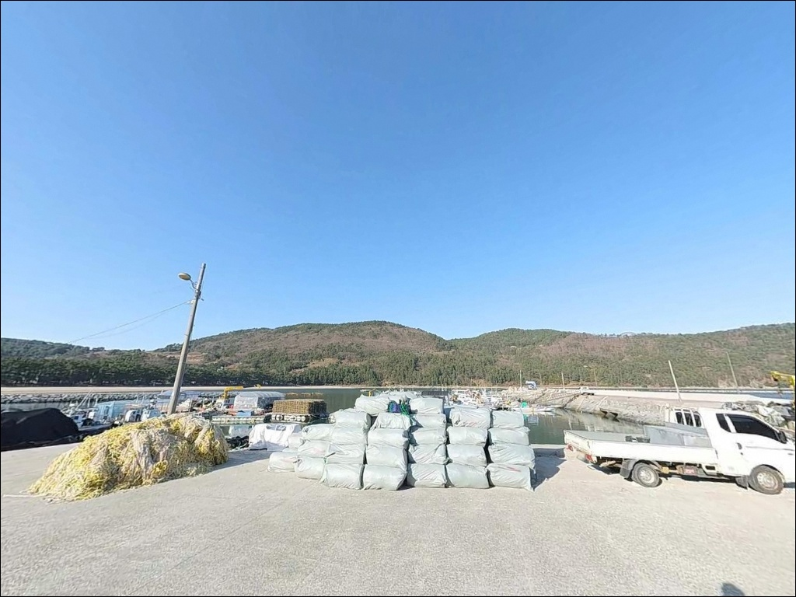
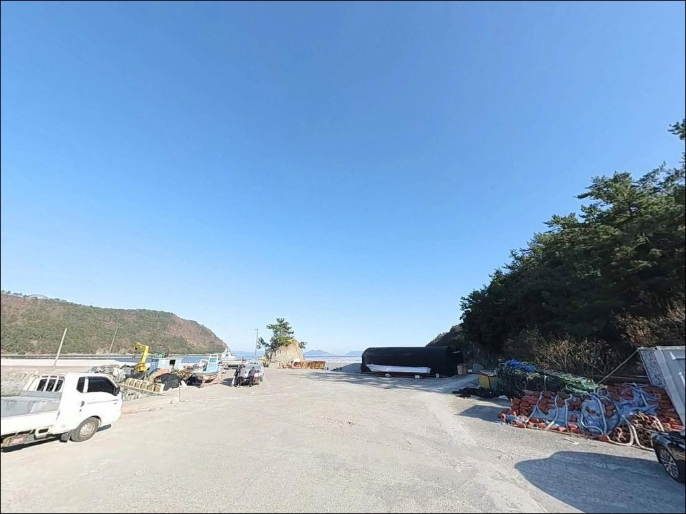
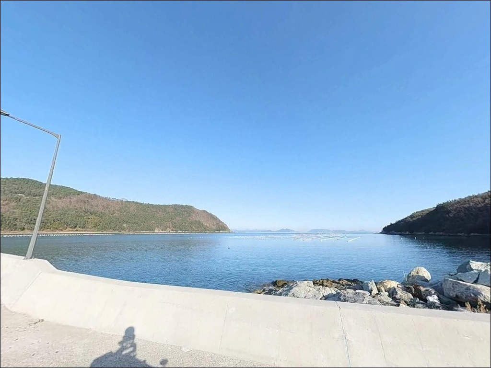
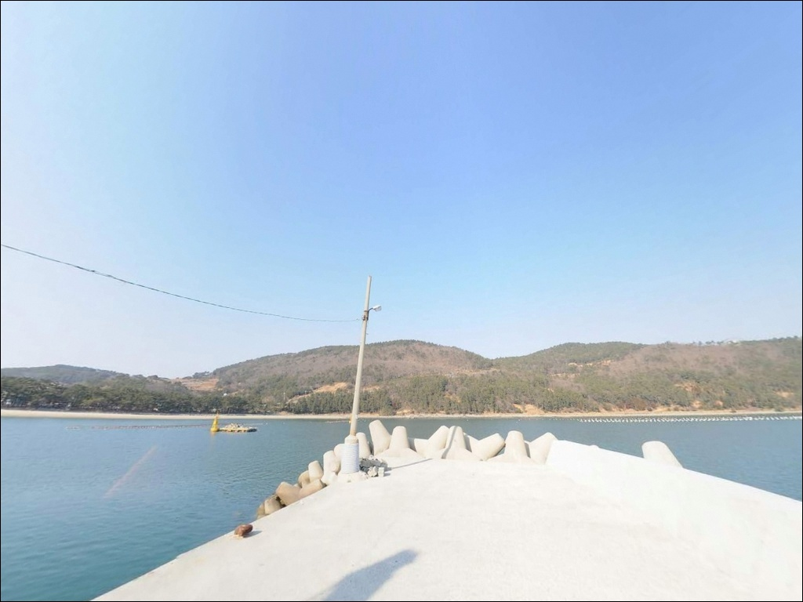
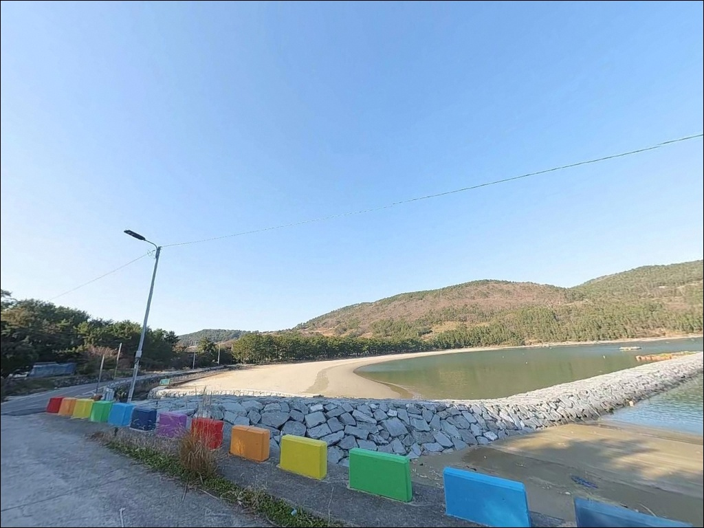

만조 수심 3m 얕은 덕흥방파제, 초들물 타임에 맞춰야 살아나는 입질
이 페이지에는 광고(제휴 링크 포함)가 있으며, 광고 링크를 통해 구매하면 운영자가 판매 수익 또는 수수료를 받을 수 있습니다. 포인트 사진: 카카오맵 스카이뷰·로드뷰. 이 페이지의 지도·사진 이미지는 카카오맵의 실제 서비스 이미지와 다를 수 있습니다.


포인트 안내
덕흥방파제
전남 고흥군 동일면 덕흥리 755
내만 포인트라 조류가 약하고
물때 상관없이 낚시할 수 있다고 판단하면
간조 구간에서 수심이 1m 이하로 낮아져
채비를 던질 여건 자체가 사라집니다.
초들물부터 만조 전후 타이밍이
이 포인트의 낚시 성패를 가르는
유일한 판단 기준입니다.
덕흥방파제는 나로1대교로 고흥 본토와 연결된
내나로도 동남 해안의 소형 어항입니다.
어촌뉴딜300사업으로 방파제, 물양장,
바다낚시터 250m 구간, 산책로가 정비되어 있으며
방파제·갯바위·백사장이
한 구역 안에 모인 복합 낚시 구조를 갖추고 있습니다.
이 글은
덕흥방파제의 진입 여건, 지형 기반 낚시 분석,
물때 판단 기준, 차박 환경에 집중합니다.
조황 단정이나 특정 어종 보장은
이 글의 범위에 포함되지 않습니다.

1. 진입 동선과 포인트 접근성
고흥 본토에서 나로1대교(국도 27호선)를 건너
내나로도로 진입한 뒤
덕흥리 방향 지방도를 따라 이동합니다.
대교에서 덕흥항까지는 약 3~4km 거리이며,
덕흥해수욕장으로 이어지는 도로는
승용차 기준 양방향 교행이 가능한 폭의 포장도로로
연결되어 있습니다.
덕흥리 마을 내부 구간은 폭이 좁아지는 구간이
일부 포함됩니다.
캠핑카나 대형 SUV라면 마을 진입 전
위성지도로 경로를 미리 확인하는 편이 좋습니다.
방파제 입구와 물양장 인접 주차 공간에서
대형 차량도 원활하게 회차할 수 있는
구조입니다.
주차는 세 곳을 활용할 수 있습니다.
덕흥해수욕장 공식 주차장(약 2,640㎡ 규모),
방파제 입구 평지 공터,
물양장 인접 측면 공간이 주요 후보지입니다.
낚시 중 어선 출입항 동선을 막지 않는 자리를
우선으로 잡아야 합니다.

2. 차박 환경과 야간 체류 여건
덕흥방파제 권역에서 차박 거점으로
가장 안정적인 공간은
덕흥해수욕장 주차장입니다.
약 600평 규모의 공식 주차장으로
방파제와 해수욕장 모두 도보 거리 안에 있으며,
화장실, 샤워장, 취사장, 야영장이 설비되어 있습니다.
어촌뉴딜300사업으로 정비된 방파제 구역에는
가로등과 산책로 조명이 설치되어 있습니다.
다만 방파제 끝단은 조명이 미치지 않는 구간이므로
야간 낚시 시 헤드랜턴은 반드시 챙겨야 합니다.
민가가 항구 배후에 위치한 어촌 구조상
야간 소음과 쓰레기 관리는
기본 매너입니다.
덕흥해수욕장 야영장은 공식 야영 가능 시설입니다.
다만 다도해해상국립공원 인접 해역이므로
국립공원 구역 내에 해당하는지 여부를
출발 전 고흥군청 또는 관할 기관에
확인해 두는 편이 안전합니다.


3. 주변 편의시설 및 인프라 현황
덕흥해수욕장에는 화장실, 샤워장,
취사장, 음수대가 설비되어 있습니다.
방파제에서 도보 이동 거리 안에 있으므로
나로도 일대 소형 방파제 중에서는
편의 접근성이 상대적으로 양호한 편입니다.
편의점과 주유소는 반경 3km 이내에서
확인되지 않습니다.
동일면 소재지 방향에 소규모 생활 인프라가
분산되어 있으며,
본격적인 장보기나 연료 보충은
외나로도 신금항(나로도항) 방면까지
약 8km 이동이 필요합니다.
식수, 얼음, 낚시 소품은 출발 전에 갖추고
진입하는 편이 현실적입니다.

4. 방문 전 반드시 챙겨야 할 준비사항
덕흥방파제에서 가장 먼저 확인할 것은 물때입니다.
바다타임 기준 이 포인트의 만조 수심은 2.4~3m로
남해안 조수 간만의 차를 적용하면
간조 시 수심이 1m 이하로 낮아지는 구간이 발생합니다.
초들물부터 만조 전후 시간대에 집중해서
출발 시각을 맞추는 것이 기본 전략입니다.
나로도 일대는 바람 변화가 빠른 해역입니다.
기상청 해양 날씨를 당일 아침 다시 한 번 확인하는 것이
포인트 낭비를 막는 조건입니다.
방파제 외항 갯바위 구간은
미끄럼 위험이 상시 존재하므로
구명조끼 착용은 필수이며,
야간에는 반드시 헤드랜턴을 지참해야 합니다.
덕흥항은 어민들이 생업을 이어가는 공간입니다.
어구(그물, 통발) 위에 짐을 올리거나
어선 이동 동선을 막는 주차는
현장에서 즉시 분쟁으로 이어질 수 있습니다.
선착장 내 작업 공간을 침범하지 않는 자리 선정이
이 포인트를 오래 이용할 수 있는
기본 매너입니다.

5. 얕은 수심이 만드는 낚시 여건 — 지형 분석
덕흥방파제는 외항을 향해 뻗은 구조이며
방파제 끝단과 갯바위 연결 구간에서
수심이 상대적으로 유지됩니다.
외항 쪽 해저는 잔돌과 암초가 혼합된 지대로
방파제 기부와 갯바위 경계 지점이
수중 기복을 만들어내는 핵심 구간입니다.
내항 방향 바닥은 펄과 모래 혼합 구조로
밑걸림이 적은 편입니다.
내나로도 동남 해안의 만 안쪽 구조상
외해 파도 영향이 완충되어
잔잔한 수면이 유지되는 날이 많은 편입니다.
덕흥해수욕장 백사장 구간은
고운 모래 사질대가 약 450m 길이로 이어져
모래바닥 원투 여건도 갖추고 있습니다.
사리 전후에는 유속이 빨라지고
소조기에는 조류가 완만해집니다.
방파제 콧부리 끝단에서 외항 방향으로
조류 흐름이 살아 있는 시간대에
입질 확률이 집중됩니다.
가기 전에 내나로도 덕흥항 주변 조황을
꼭 검색해 보시기 바랍니다.


6. 이 포인트에 어울리는 낚시 스타일
방파제 콧부리와 갯바위 연결 구간에서는
찌낚시가 잘 어울리는 지형 조건입니다.
릴찌낚시로 외항 조류를 타고 흘리는 방식이
기본이며, 수심이 얕으므로
채비 수심 조절이 조과의 핵심입니다.
이 일대 해역에서는 감성돔과 볼락이
기대 대상어로 꼽히는 어종입니다.
갯바위와 방파제 테트라포드 주변에서는
루어낚시도 유효합니다.
소형 지그헤드 채비로 암초 경계선을
천천히 탐색하는 볼락 라이트게임이
야간에 특히 잘 맞는 스타일이며,
나로도 일대는 갑오징어 에깅 시즌 폭이 넓은 해역으로
방파제 끝단에서 외항 방향 캐스팅이 기본 운용 방법입니다.
덕흥해수욕장 백사장 구간에서는
모래바닥 원투낚시가 어울립니다.
사질 내만 여건상 도다리, 보리멸, 넙치 계열을
기대해 볼 수 있는 구조이며,
수온이 오르는 봄~가을이 활성화 시기입니다.
방파제와 해수욕장을 번갈아 공략하는 방식이
이 포인트를 가장 효율적으로 운용하는 방법입니다.

7. 대안 포인트와 플랜 B 동선
덕흥방파제 수심이 기대에 미치지 못하거나
물때가 맞지 않을 때 가장 먼저 이동할 곳은
나로1대교 아래 갯바위입니다.
덕흥방파제에서 약 2km 거리이며
교각 주변 수심과 조류가 형성되는 루어낚시 포인트로,
물때에 따른 보조 포인트로 활용하기 좋습니다.
구룡마을 갯바위는 약 2.2km 거리의
바다타임 등록 포인트입니다.
내나로도 내에서 덕흥방파제와 비슷한
지형 조건을 갖추고 있어
당일 동선 안에서 자연스럽게 연결할 수 있습니다.
더 넓은 수심과 다양한 포인트를 원한다면
외나로도 방면 나로도항 남방파제(약 9km)까지
이동하는 동선이 효율적입니다.
차박 거점을 바꾸고 싶다면
외나로도 염포해수욕장 야영장이 대안입니다.
국립공원공단이 운영하는 공식 야영 시설이며
염포방파제 낚시 포인트와 인접해 있어
낚시와 차박을 함께 계획하기에 좋은 조합입니다.

물때와 지형을 알면
덕흥방파제가 넓어 보입니다
방파제, 갯바위, 백사장이 한 구역에 모인 덕흥방파제는
낚시 스타일을 다양하게 운용할 수 있다는 점에서
나로도 일대 소형 방파제 중 활용도가 높은 포인트입니다.
찌낚시, 루어낚시, 원투낚시, 에깅을
한 번의 출조에서 순서를 달리해 공략할 수 있는
지형 조건을 갖추고 있습니다.
다만 수심이 얕은 내만 구조이므로
물때 판단 없이 간조 시간대에 도착하면
낚시 여건 자체가 성립하지 않습니다.
물때 확인, 출발 시각 조율, 채비 준비를
갖추고 들어간다면
볼락부터 감성돔, 사질대 도다리까지
다양한 시도가 가능한 포인트입니다.
덕흥해수욕장 편의시설과 공식 주차장이
방파제 옆에 붙어 있어
낚시 마치고 그대로 하룻밤 머무는
차박 일정과 자연스럽게 연결되는 곳입니다.